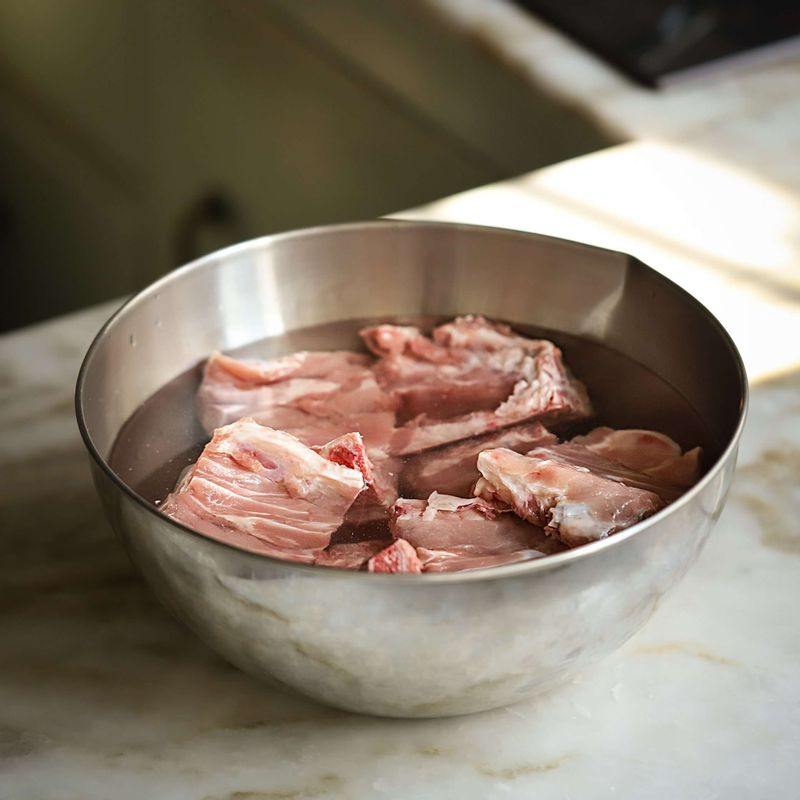
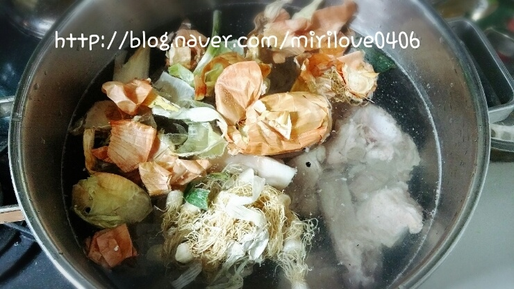
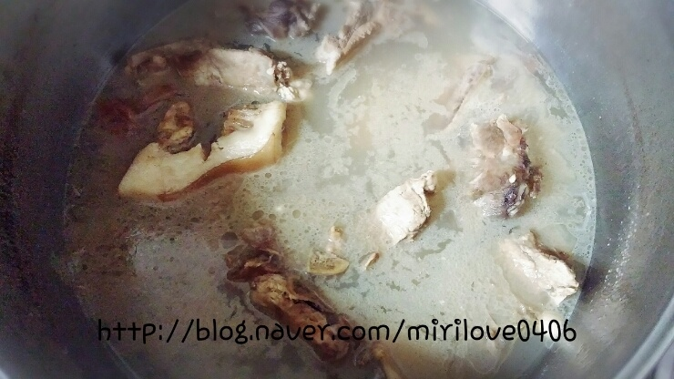
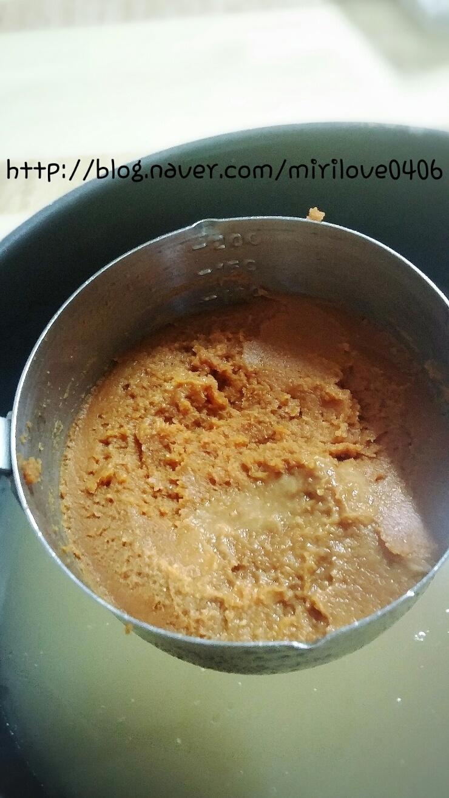
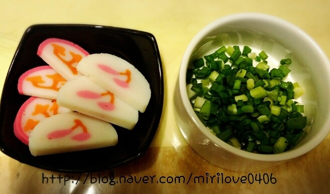
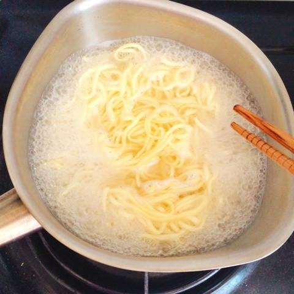

 돼지등뼈는 찬물에 담가 핏물을 빼줌니다.

핏물빼준 등뼈를 통후추, 알커피, 대파, 마늘을 넣어 끓여주세요
(대파, 마늘,양파껍질이 없어도 괜찮치만 넣어주시는게 잡내잡아주기 좋아요.)
뽀얗게 우러나올정도로 끓여주세요.
 끓인 등뼈육수를 식혀 기름을 걷어주세요.

돼지등뼈 육수 8컵에 미소된장 1컵 (100ml) , 설탕 1T, 간장6T를 넣어 미소라멘 육수를 끓여주세요.
* 표준 계량이 아니고 지극히 개인계량임을 알려줍니다. 입맛에따라 간해주세요.
 국물을 끓여줄때 다른냄비에 달걀을 삶아주시고, 숙주 씻어주시고, 꽃어묵과 쪽파를 썰어주세요.

사리면을 끓여 찬물에 씻어준후 그릇에 1인분씩 나눠담고 미소라멘 육수를 담고
꽃어묵, 쫑쫑썬 쪽파, 삶은달걀, 차슈, 숙주 한줌을 담아내면 !!!!
 맛있게 드실수 있습니다.!!!!
맛있게 드실수 있습니다.!!!!